Magic: The Gathering
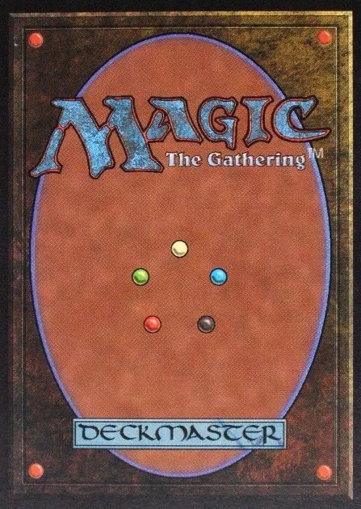
Aparut in 1993, Magic: The Gathering este primul joc de carti colectionabile (collectible card game sau trading card game). Fiind ideea stralucita a matematicianului Richard Garfield, cei de la Wizards of the Coast au inceput o afacere foarte profitabila, dovada fiind succesul instantaneu al jocului. La doar un an de la lansare in 1994, Magic: The Gathering a avut primul sau turneu mondial. De atunci inainte turneul este tinut anual pe baza de invitatie, iar premiul cel mare este de 45.000$.
Momentan, Magic: The Gathering are aproximativ 12 milioane de jucatori. Eu joc doar pentru distractie. Nu voi incerca niciodata sa joc in competitii deoarece este prea costisitor. De ce? Pentru ca in majoritatea turneelor se folosesc anumite seturi de carti, iar Wizards of the Coast scot cam 3 seturi noi in fiecare an. Multe carti sunt re-tipariri din seturile anterioare, dar sunt si multe carti noi. Fiecare set vine cu un numar de carti cuprins intre 140 si 300 iar, aproape la fiecare set nou, este eliminat din turnee un set mai vechi. Dupa cum am mai spus, eu joc doar pentru distractie. Nu cunosc prea multe despre turnee sau campionate asa ca este posibil sa am cateva greseli in explicatii, dar sa vorbim inainte despre tematica …
Jocul te pune in rolul unui planeswalker, un magician puternic ce isi foloseste puterile pentru a se lupta cu alti magicieni. Pentru aceasta exista doua tipuri principale de carti, lands (ce tin rolul resurselor) si spells (vraji). Acestea sunt si ele impartite in functie de raritate: comune, ne-comune, rare si mitice. Cu cat sunt mai greu de gasit cu atat sunt mai bune, dar si mai scumpe de cumparat.
Dupa cum spuneam, land-urile sunt cartile ce genereaza resurse pentru a plati costul vrajilor, al abilitatilor si al efectelor de pe carti.
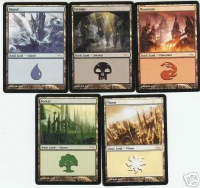
Este evident ce culoare de mana genereaza fiecare tip de
land.
In categoria vrajilor intra toate cartile in afara de land-uri. Astfel si creaturile sunt tot vraji pana cand ajung pe campul de lupta. Majoritatea au un cost pentru a putea fi activate.
De exemplu:
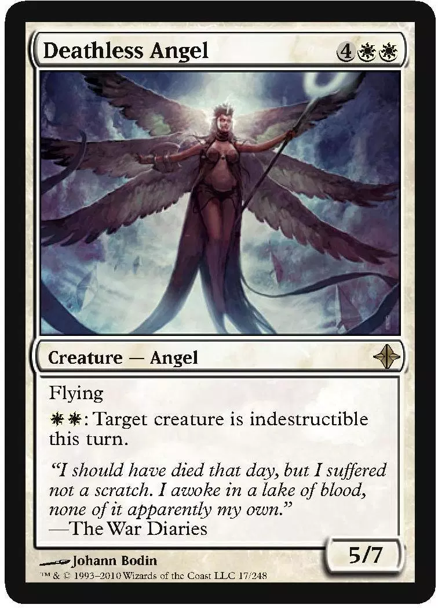
Deathless Angel este o creatura de tip Angel. Are abilitatea Flying si inca o abilitate ce necesita cheltuirea a doua puncte de mana alba pentru a fi activata. Are valoarea Atacului (Power) egala cu 5 iar cea a Vietii (Toughness) egala cu 7. Pentru a chema aceasta creatura, jucatorul trebuie sa-i plateasca intregul cost (din dreapta sus). In acesta caz, 4 mana de orice culoare + doua mana neaparat alba.
Poate cu alta ocazie voi intra in detaliu despre toate tipurile de carti si abilitatile acestora. Sunt peste 200 de abilitati si daca nu ma insel, peste 20.000 de carti. Asta include toate cartile de la promo-uri pana la tokens.
Inainte de a trece la gameplay, vreau sa va minunati putin la artwork-ul cartilor ce, de la an la an, este tot mai impresionant.
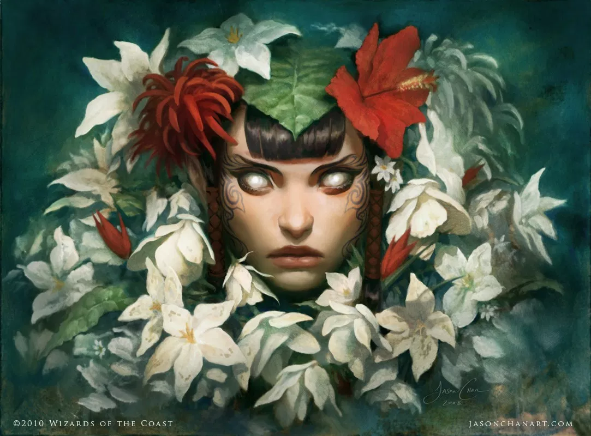
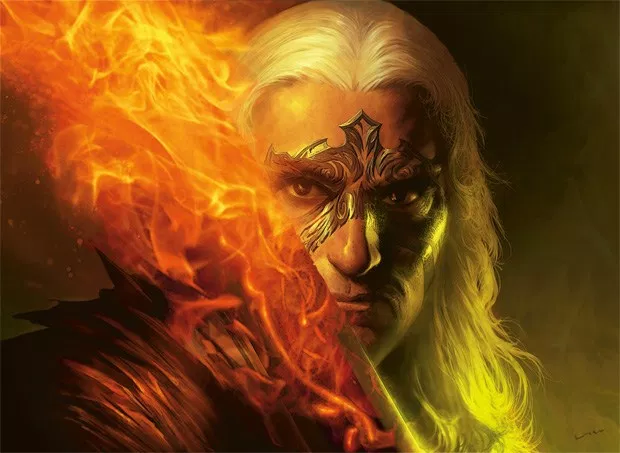
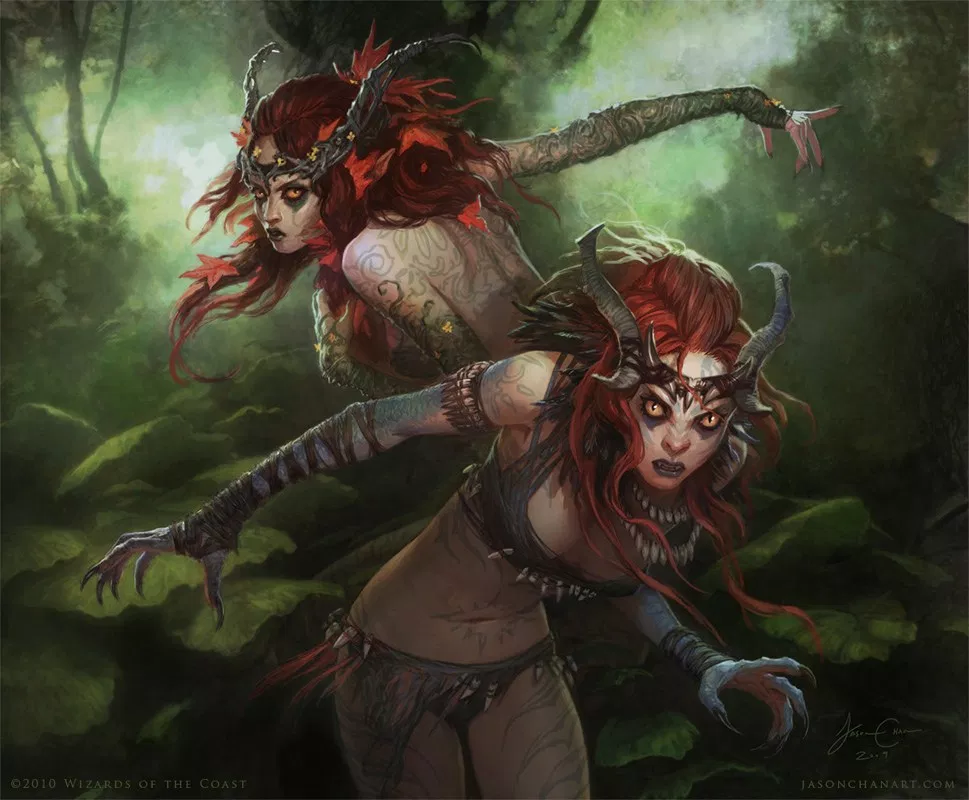
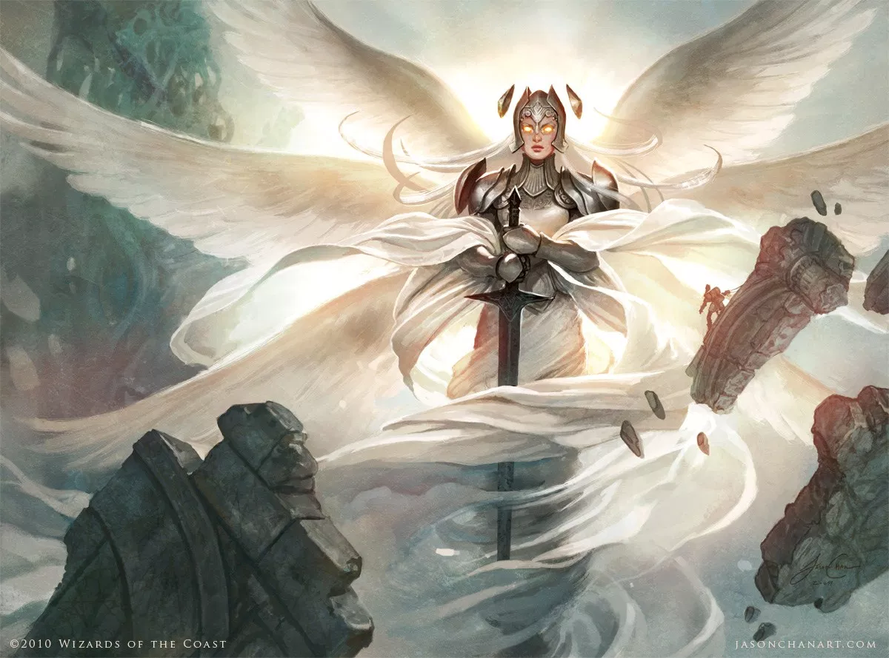
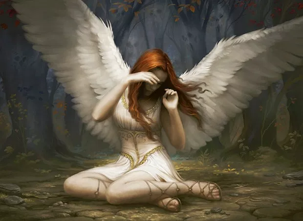
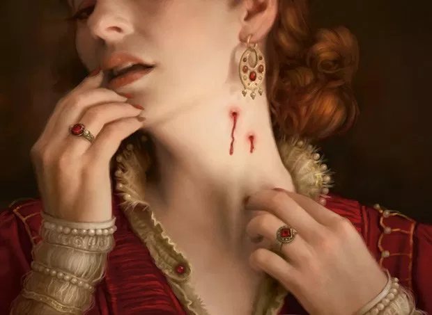
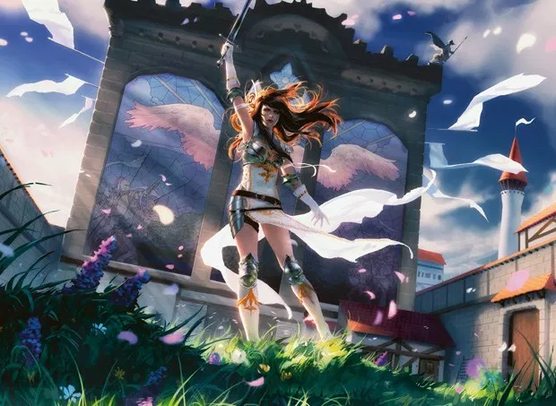
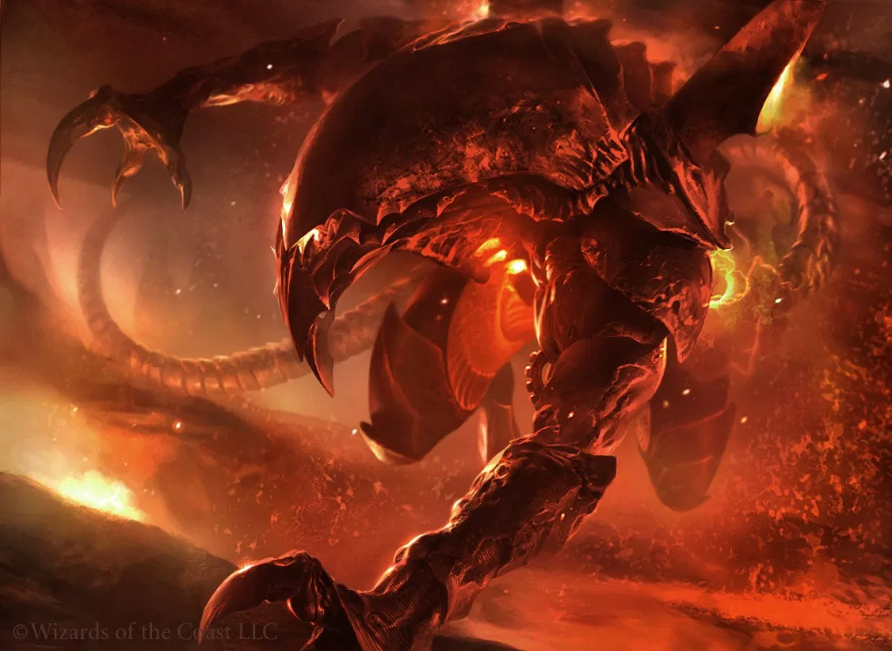
Gameplay
Fiecare jucator incepe cu 20 de puncte de viata. Se hotaraste cine incepe primul si se bat pachetele de carti (de minim 60 de carti). Jucatorii trag 7 carti din pachet si se uita la ele. Acum, fiecare are optiunea de a face
mulligan. Asta inseamna ca isi bate din nou pachetul cu tot cu cele 7 carti din mana si trage alte 6 carti. Se poate face mulligan de mai multe ori, dar numai la inceputul jocului. Dupa ce toti jucatorii sunt multumiti de cartile trase, se poate incepe lupta.
Turul unui jucator cuprinde 6 faze:
1. Upkeep (in lb. romana s-ar traduce
"Detapare")
In aceasta faza se intorc in pozitie verticala toate cartile tapate (
tapped sau intoarse 90o) in tura anterioara. Aceasta actiune se numeste
untap sau
detapare. Tot in aceasta faza, creaturile chemate in turul trecut pierd restrictia de a ataca.
2. Tragerea unei carti
In aceasta faza jucatorul trage cartea de deasupra pachetului sau. La inceputul jocului, primul jucator nu are voie sa traga o carte. Astfel se balanseaza faptul ca el este primul.
3. Faza principala 1
a) Jucatorul are voie sa joace o singura resursa (
land). Land-urile nu au cost si sunt asezate in zona lor proprie de sub campul de lupta.
b) Jucatorul poate juca oricate vraji doreste, atat timp cat are resursele necesare.
Pentru a juca o vraja, jucatorul trebuie sa intoarca 90o atatea land-uri cate sunt necesare pentru a acoperi costul vrajii. In exemplul de mai sus, pentru a chema
Deathless Angel, jucatorul trebuie sa dea
tap la 4
land-uri oarecare (nu conteaza tipul sau culoarea) + doua
land-uri ce genereaza mana alba. Astfel are nevoie de 6 resurse nefolosite.
Inainte de a ajunge pe camp, vrajile trec prin
Stack, o
gramada imaginara ce permite tuturor jucatorilor sa activeze abilitati speciale sau sa joace alte vraji.
Un mic exemplu:
Eu vreau sa joc vraja
X. Ii platesc costul, o iau din mana si ma pregatesc sa o pun pe camp. In acest moment adversarul meu ma intrerupe si activeaza abilitatea unei creaturi,
Y. Apoi se hotaraste sa joace si el o vraja,
Z, platindu-i costul. Daca nimeni nu mai joaca sau nu mai activeaza nimic, se incepe rezolvarea
gramezii, in ordine inversa. Intai vraja
Z a adversarului, apoi abilitatea
Y iar in final creatura mea,
X.
4. Faza de atac
Toate creaturile chemate in acest tur (in
faza principala 1) sufera de
summoning sickness. Mai exact, nu pot ataca decat incepand cu urmatoarea faza de
upkeep din turul tau. Daca ai creaturi ce pot ataca atunci:
a) Declara atacatorii. Hotaraste cu ce creaturi vei ataca si da-le
tap. In MtG creaturile ataca direct adversarii. Cand un jucator ramane cu 0 sau mai putin la viata, atunci pierde jocul.
b) Adversarul hotaraste aparatorii. Asta inseamna ca se poate apara impotriva atacurilor. Pentru a se apara isi alege creaturile ce vor lupta impotriva creaturilor ce ataca. Pentru aparare se pot folosi doar creaturile ce nu au fost
tapate (tapped), chiar si cele cu
summoning sickness. Fiecare creatura poate bloca o singura creatura inamica, dar se pot folosi mai multe creaturi pentru a bloca una singura. Creaturile care nu au fost blocate vor ataca adversarul si ii vor scade din punctele de viata. Atacatorii care au fost blocati isi exercita atacul asupra aparatorilor, dar si invers. Aceste atacuri se intampla simultan.
De exemplu: Eu folosesc creatura
X (cu 5 la atac si 7 la viata) pentru a-mi ataca adversarul.El are doua creaturi:
A (cu 4 la atac si 3 la viata) si
B (3/2). Daca foloseste doar creatura
B, atunci
X isi va folosi intreg atacul pentru a o distruge. In acelasi timp
B o va ataca pe
X, dar nu are destul atac pentru a-i scade toate cele 7 puncte de viata. O alta optiune pentru aparator ar fi fost sa-si foloseasca ambele creaturi
A si
B, pentru a bloca pe
X. In acest caz eu as fi avut optiunea de a-mi imparti atacul. Din cele 5 puncte de atac puteam folosi 3 pe creatura
A si 2 pe creatura B. In acelasi timp, atacul creaturilor
A+
B ar fi fost destul sa-mi distruga creatura (4+3=7).
Toate creaturile omorate sunt puse in cimitir.
5. Faza principala 2
Aceasta faza este la fel precum
faza principala 1.
6. Sfarsitul turei
Acum se vindeca toate creaturile si vine tura altui jucator.
In exemplul trecut, creatura
X a fost blocata de catre creatura
B si a ramas cu 4 la viata din maximul de 7. In aceasta faza creatura
X si-ar recapata punctele de viata pierdute.
Cam asa decurge un tur de
Magic: The Gathering. Recunosc, mie imi place jocul. Un lucru care face din aceste carti un joc foarte indragit este faptul ca isi incalca singur regulile. Pentru fiecare regula a jocului exista cel putin o carte care o incalca.
Cateva exemple:
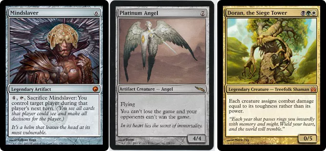
Cea mai mare problema a sa este costul. Pachetele pentru incepatori sunt slabe iar majoritatea amuzamentului vine din crearea propriului tau pachet. Poti combina culorile in ce mod doresti, singura restrictie fiind ca nu poti avea in pachet mai mult de 4 copii ale unei carti. In schimb, poti avea cate
land-uri doresti. Aici apare si o alta mica problema a jocului, cea a factorului de noroc. Degeaba poti juca un numar nelimitat de vraji daca nu ai resursele necesare. Daca joci doar pentru amuzament atunci
Magic: The Gathering este un joc foarte bun, mai ales daca mai ai prieteni cu care poti face schimburi de carti. In orice caz, este un joc care merita incercat de oricine.